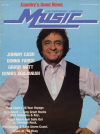

Johnny CashOn the cover
April 1981
Contemporary Christian Music | Media coverage:- 3 Apr 1969 in Christian Advocate "The Top 40: A Conscience For the Young", by David Lehmberg
- Jan 1972 in Logos Journal "Late News: New Gospel Film"
- May 1972 in Youth Alive! "Poster: Johnny Cash"
- May 1972 in Youth Alive! "The Exciting Story of Johnny Cash"
- May 1972 in Probe "My Name Is Johnny Cash"
- Dec 1972 in Eternity "He Walks A New Line", by Charles Paul Conn
- Mar 1973 in Campus Life "What's Happened to Johnny Cash?", by Charles Paul Conn
- Jun 1973 in Christian Herald "Johnny Cash's Jesus Trip", by Kenneth L. Woodward
- 10 Aug 1973 in Christianity Today "Refiner's Fire: Jesus Country", by Cheryl A. Forbes
- May 1974 in Right On! "A Joyful Noise: Recounting musicians influenced by the Jesus Movement or now doing more gospel music: Larry Norman, Barry McGuire, Noel Paul Stookey, Johnny Cash, Eric Clapton, Tommy James, Billy Preston, Chi Coltrane, Turley Richards", by Paul Baker
- Sep 1975 in Christian Life "She Calls Him John"
- Sep 1975 in Christian Life "The Westside Story", by Mary Ruth Seybold
- Apr 1981 in Contemporary Christian Music "Johnny Cash", by Don Cusic
- May 1982 in Christian Herald "'The Man In Black' at 50", by James C. Hefley
- Jun 1991 in Heaven's Metal "Smashing, Flying, Screaming Pigs", by Spiny Norman
- Oct 2000 in CCM "On The Beat: Johnny Cash Compiles Love, God, Murder From Over 40 Years of Recordings", by Thom Granger
- Jul 2003 in Prism "Music Notes: Wisdom of the Ages", by Dwight Ozard
- 4 Oct 2003 in Christian Century "The Man In Black", by C. Clifton Black
- Nov 2003 in HM "Beyond Relevance", by John J. Thompson
- Nov 2003 in CCM "Insider: Johnny Cash 1932 - 2003"
- Jan 2004 in New Man "Guy Gear: Hidden Tracks", by Jonathan Heide
- Jan 2004 in Relevant "Never Give Up: The Steadfastness of Johnny Cash", by Dave Urbanski
- Jan 2004 in Sojourners "Culture Watch: Johnny Cash Goes Home", by Kimberly Burge
- Nov 2004 in CCM "List-O-Rama: Saddle Up: 5 Songs That Make Me Think of Cowboys", by Chris Well
- Jan 2006 in Relevant "The Movie Issue: Walking The Line", by Dave Urbanski
- Sep 2006 in HM "Classic Moments: One Bad Pig, Johnny Cash", by Doug Van Pelt
- Jan 2007 in CCM "List-O-Rama: Book 'Em Jimbo: 5 Proofs of the Secret Connection Between Crime Stories and Christian Music", by Chris Well
- Feb 2007 in Charisma & Christian Life "News: Evangelist to Johnny Cash Ministers In Africa"
- Apr 2007 in CCM "List-O-Rama: End of the Line: 5 Artists Singin' About The Return of Jesus", by Chris Well
- May 2007 in CCM "Salt and Light In A Gray World: Johnny Cash", by John J. Thompson
- Mar 2008 in Prism "Music Notes: Peace In A Pod", by Todd Komarnicki
- Jun 2010 in Sojourners "Eyes & Ears: Johnny Cash's Final Songs", by Danny Duncan Collum
- Jul 2014 in Relevant "The Drop: The Dylan/Cash Comeback"
Albums & reviews:1959: Hymns by Johnny Cash
1962: Hymns from the Heart
1969: The Holy Land
1970: Hello, I'm Johnny Cash
1971: Man In Black
1973: The Gospel Road
1973: Any Old Wind That Blows
1974: Ragged Old Flag
1975: Johnny Cash Sings Precious Memories
1975: The Johnny Cash Children's Album
1979: A Believer Sings the Truth
1984: I Believe...
1990: Gospel Glory
1990: Goin' by the Book
1992: Return to the Promised Land
1994: American Recordings
2000: American III: Solitary Man
2002: American IV: The Man Comes Around
2003: Christmas with Johnny Cash
2004: My Mother's Hymn Book
2006: American V: A Hundred Highways
2007: Johnny Cash At San Quentin
2007: Johnny Cash reading the complete New Testament
2008: Johnny Cash's America
2008: At Folsom Prison [Legacy Edition]
2009: Johnny Cash Remixed
2009: Original Sun Singles 1955 - 1958
2010: American VI: Ain't No Grave
2011: From Memphis to Hollywood
2012: Bootleg Vol IV: The Soul of Truth
2014: Out Among the Stars
Award Summary (Nominations / Wins)
Dove AwardsBooks- 1976: Man in Black
- 1986: Man In White
Books about Johnny Cash
- "Johnny Cash" in The Encyclopedia of Contemporary Christian Music (Mark Allan Powell, 2002).
|